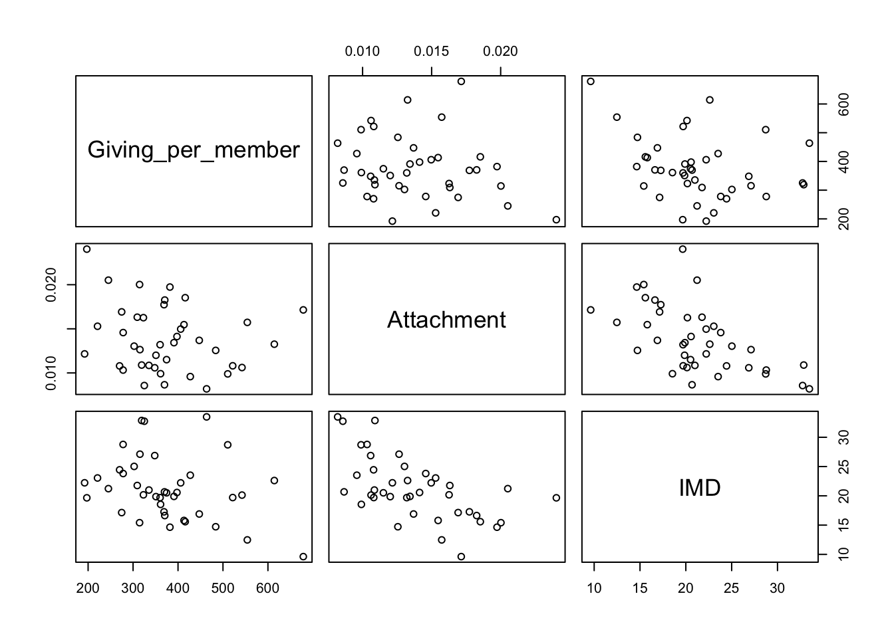
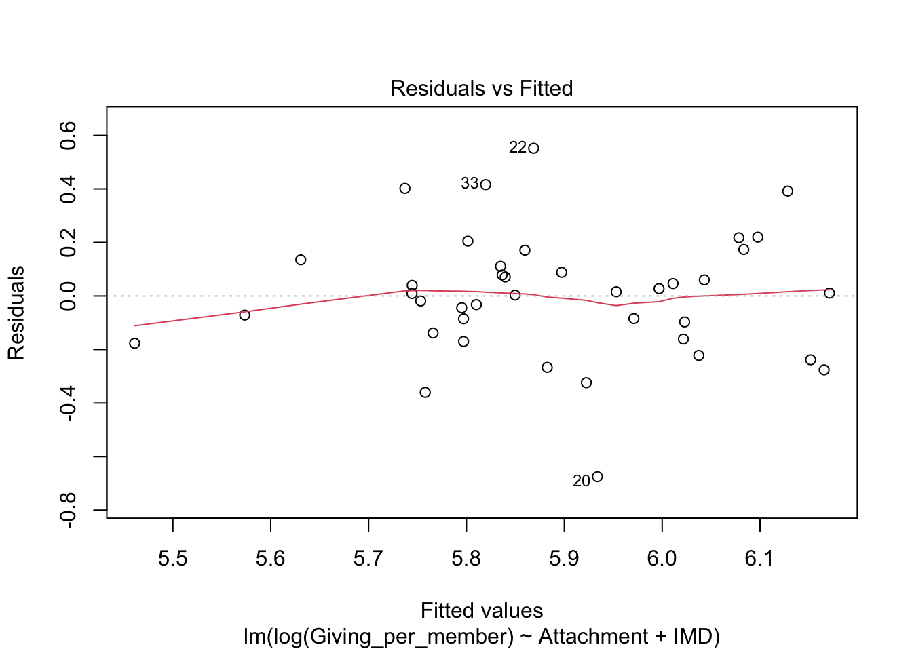

10.8 Transforming the response variable: Giving in the Church of England
As an example, we will look again at the cofe data. The rp.wrangle function from the rpanel package provides a convenient way of recreating the collated data, using the code discussed earlier in Chapter 3. When given a dataframe, the plot function produces a scatterplot matrix which displays all possible scatterplots of two variables in a neat layout. As we saw earlier, the effects of Attachment and IMD on Giving do not look strong. The strongest association is actually between the two covariates, Attachment and IMD!
library(rpanel)
cofe_2019 <- rp.wrangle('cofe_2019')
plot(cofe_2019[ , c("Giving_per_member", "Attachment", "IMD")])
## Estimate Std. Error t value Pr(>|t|)
## (Intercept) 877.27025 125.336466 6.999322 2.840637e-08
## Attachment -16437.88039 4902.285513 -3.353105 1.854021e-03
## IMD -12.92725 3.399288 -3.802929 5.184416e-04The fitted linear model can be written as \[ y = \hat{\beta_0} + \hat{\beta_1} x_{1} + \hat{\beta_1} x_{2} . \] which corresponds to a plane in 3D. This plane has been superimposed onto a 3D plot of the data below. The green vertical lines show the discrepancies between the observed data (red points) and the fitted model. The points at which these lines meet the plane are referred to as the fitted values, defined as \[ \hat{y}_i = \hat{\beta_0} + \hat{\beta_1} x_{1i} + \hat{\beta_1} x_{2i} . \] The discrepancies between the data and the fitted model, referred to as residuals are then \[ r_i = y_i - \hat{y}_i . \]
rp.lm(Giving_per_member ~ Attachment + IMD, data = cofe_2019,
panel = FALSE, residuals.showing = TRUE)
There are some concerns about how well the model fits. We might consider whether we have a suitable scale of measurement for giving. This can be investigated more systenatically by considering all possible ‘power transformations’ of \(y\). If these transformations are suitably scaled then the \(log\) transformation corresponds to power 0. The boxcox function from the MASS package implements this using the very powerful principle of likelihood. This gives a strong indication that the log transformation is appropriate.

Model checking plots for the new model show some improvement.



The plot below displays the model we have now reached.
However, before rushing into drawing conclusions, it would be helpful to understand what the model is doing.
with(cofe_2019,
rp.regression(cbind(Attachment, IMD), Giving_per_member,
model = "Attachment and IMD",
residuals.showing = TRUE))Before we get to interpretation, it would also be wise to consider whether the model is actually a good description of the data.
What are residuals? Why are the useful? Model checking.


How well does the model fit? Do we have a suitable scale of measurement for giving?


Move to log giving. Further plots and summary.
## Estimate Std. Error t value Pr(>|t|)
## (Intercept) 7.26552184 0.325300362 22.334810 4.509678e-23
## Attachment -47.19325370 12.723473891 -3.709148 6.794607e-04
## IMD -0.03410173 0.008822568 -3.865284 4.325664e-04Neither explanatory variable is significant on its own. The influence of one variable becomes apparent only after adjustment for the other. (Very strong with this new dataset?)
model1 <- lm(log(Giving_per_member) ~ Attachment, data = cofe_2019)
model2 <- lm(log(Giving_per_member) ~ IMD, data = cofe_2019)
summary(model1)$coefficients## Estimate Std. Error t value Pr(>|t|)
## (Intercept) 6.14451 0.1722563 35.670740 7.951727e-31
## Attachment -18.33212 12.0445039 -1.522032 1.362799e-01## Estimate Std. Error t value Pr(>|t|)
## (Intercept) 6.20664603 0.180248229 34.433881 2.922882e-30
## IMD -0.01489757 0.008256136 -1.804424 7.909529e-02This is not about prediction. R-squared etc.
Other covariates highly correlated with Attachment. Collinearity.
Look at vif in the car package.
Look at the car package in general.